Background
The scale-of-effect problem
Many abiotic and ecological processes are shaped by variables that operate at multiple spatial scales. A central challenge in landscape ecology is determining the scale of effect: the spatial extent over which a landscape variable influences a biological response measured at a sampling location.
Consider a practical example. You are modeling songbird abundance across a forested region, and you suspect that the proportion of forest cover in the surrounding landscape matters. But how large should that surrounding area be? Should you measure forest cover within 100 m of each survey point? 500 m? 2 km? The answer is not known in advance. It depends on how far an individual moves across the landscape, how far away habitat features can affect local conditions, and on the strength of the biological relationship itself.
Traditional approaches test a fixed set of candidate buffer radii, fit a separate model for each, and compare them. This approach has two key limitations. First, the investigator must guess plausible scales in advance, and the true scale might fall between the tested values. Second, a fixed-width buffer treats every landscape cell within the radius equally, as if a forest patch 50 m away matters just as much as one at 499 m.
multiScaleR addresses both limitations by representing
landscape influence as a distance-weighted kernel: a
weighting function that assigns higher weight to nearby landscape cells
and smoothly decreasing weight to cells farther away. The width of that
kernel, σ (sigma, in map units), controls how rapidly influence decays
with distance. Crucially, σ is estimated from the data as a parameter of
the statistical model, alongside the familiar regression coefficients.
This means you do not need to pre-specify the scale; the data identify
it for you.
What multiScaleR does
With advanced coding skills, Bayesian analytical frameworks can be
used to estimate scales of effect (e.g., Stuber & Gruber 2020;
Amirkhiz et al. 2023). More recently, user-friendly R packages have been
developed: Siland (Carpentier & Martin 2021) and
Scalescape (Lowe et al. 2022) both estimate
distance-weighted landscape effects. multiScaleR extends
this family of tools with several practical advances:
- Optimization is implemented in C++ with sparse matrix support, making it efficient for large landscapes and sample sizes.
- Standard errors and confidence intervals on σ are reported alongside point estimates.
- Raster surfaces can be smoothed at the optimized scale and used
directly for spatial prediction with
terra::predict(). - Model selection tables (AIC, BIC) account for the additional parameters estimated during scale optimization.
- Functions to simulate rasters and response data facilitate power analysis and methods testing.
multiScaleR supports models of class glm,
glm.nb, nlme (including gls),
lme4, and many unmarkedFit classes. For
unmarked, a raster covariate being optimized must be a
static site covariate, and the fitted class must support refitting with
updated data. Other model classes may work when they provide a suitable
update method and are supported by insight. Let me
know if you encounter issues or would like to see support for other
model classes.
References
Amirkhiz, R. G., R. John, and D. L. Swanson. 2023. A Bayesian approach for multiscale modeling of the influence of seasonal and annual habitat variation on relative abundance of ring-necked pheasant roosters. Ecological Informatics 75:102003.
Carpentier, F., and O. Martin. 2021. Siland a R package for estimating the spatial influence of landscape. Scientific Reports 11:7488.
Lowe, E. B., B. Iuliano, C. Gratton, and A. R. Ives. 2022. ‘Scalescape’: an R package for estimating distance-weighted landscape effects on an environmental response. Landscape Ecology 37:1771–1785.
Stuber, E. F., and L. F. Gruber. 2020. Recent methodological solutions to identifying scales of effect in multi-scale modeling. Current Landscape Ecology Reports 5:127–139.
A Conceptual Road Map
Before writing any code, it helps to see how the pieces fit together. The core workflow has four stages:
[Optional: simulate data] [Your field data]
sim_rast() Spatial Point Data
sim_dat() (GPS coordinates)
sim_dat_unmarked() +
| Raster Layers
| (habitat covariates)
| |
+--------> kernel_prep() <-+
|
| Computes distance-weighted raster
| values at each sample point;
| output feeds directly into model
v
[Fit initial regression model]
glm() / lme4::lmer() / gls()
pscl::zeroinfl() / unmarked / ...
|
v
multiScale_optim()
(simultaneously estimates sigma for
each raster layer and regression
coefficients via maximum likelihood)
|
+--------------+--------------+-----------+
| | | |
summary() plot() plot_marginal_ aic_tab()
(sigma CIs, (kernel effects() bic_tab()
regression weight (covariate
output) decay) effect plots)
|
v
kernel_scale.raster()
(apply optimized kernel to full raster extent;
optionally scale/center and clamp values)
|
v
terra::predict()
(spatially explicit predictions across the landscape)The key function is multiScale_optim(). It takes your
fitted model and the kernel_prep output, then optimizes the
kernel width (σ) for each spatial covariate. Everything else flows from
that fitted object: model summaries, plots, model selection, and spatial
projection.
Key concepts to keep in mind:
-
σ (sigma): The scale parameter of the kernel
function (in map units, e.g., meters). It controls how quickly kernel
weight declines with distance. For an ideal Gaussian kernel with σ = 300
m on an unbounded plane, a circle of radius 644 m holds 90% of the
weight. This planar radius is about 2.15σ (see
kernel_dist()below). The share represented by extracted raster cells can differ near boundaries, missing cells, or a finitemax_D. -
max_D: The maximum distance (in map units) to extract raster values for each sample point. This should exceed your expected scale of effect. IfmultiScale_optim()warns that an estimated σ is nearmax_D, re-runkernel_prep()with a larger value. - Initial model: The model you fit before optimization uses unsmoothed (initial σ) kernel-weighted covariate values. Its structure (formula, family, random effects) is inherited by the optimization. Get the model structure right before optimizing.
Distance-weighted Effects
Choosing a kernel
There are many different kernel transformations that could be used to quantify the contribution of environmental variables as a function of distance. The kernel function determines the shape of that decay: how quickly nearby cells lose influence relative to the focal point.
Four kernel functions are implemented in multiScaleR. In
each case, σ (sigma) is estimated during optimization and controls the
spatial scale (width) of the kernel. All plots below show the weight
assigned to a landscape cell as a function of its distance from a sample
point. By default, the vertical line marks the radius containing 90% of
ideal kernel weight on a plane (2D). The curve still shows cell weight
versus distance, not the total weight in concentric rings. Consequently,
90% of the area under the displayed curve need not lie to the left of
the planar marker.
Reporting default change: Version 0.7.4 and later
use dimension = "2d" in kernel_dist(),
plot_kernel(), fitted-model plots, and summaries. The
original dimension = "1d" remains available explicitly.
This is a change in how distance is reported, not in fitted sigma values
or the model likelihood. Simulation extents, projection windows, and
stored optimization warnings continue to use their historical 1D
cutoffs.
For a Gaussian kernel with sigma = 300 m, the 90% planar radius is
about 644 m, while the original line-based distance is about 493 m.
There are more cells in rings farther from a point, so a planar radius
must account for ring area as well as each cell’s declining weight. The
493 m circle contains only about 74% of total ideal planar weight.
Neither distance measures site-specific retained weight after
max_D, raster edges, missing cells, or cell geometry
restrict the available landscape.
# Compare definitions without fitting or changing a model.
c(planar_2d = kernel_dist(sigma = 300, kernel = "gaussian"),
original_1d = kernel_dist(sigma = 300, kernel = "gaussian", dimension = "1d"))
#> planar_2d original_1d
#> 643.79 493.46- Gaussian (recommended for most uses): smooth, symmetric bell-curve decay. Governed by a single parameter σ.
- Negative Exponential: faster initial decay than Gaussian; also governed by σ alone.
- Exponential Power: flexible shape controlled by σ (scale) and β (shape). Experience with simulated data suggests this kernel is prone to overfitting and optimization can fail to converge; use with caution.
- Fixed buffer: a hard-edged buffer. All cells within the buffer contribute equally; all beyond it contribute nothing. This replicates the traditional buffer-based approach.
The Gaussian kernel is the default and performs well across a wide range of ecological scenarios. When in doubt, start with it.
Note: Figures in this document may render at lower quality than running code locally.
-
Gaussian (
gaus): Decay in space governed by a single parameter (sigma) -
Negative Exponential (
exp): Decay in space governed by a single parameter (sigma) -
Exponential Power (
expow): Decay in space governed by a scale parameter (sigma) and a shape parameter (beta) -
Fixed width buffer (
fixed): Effect does not decay with distance
Preparing Data
Prior to using multiScaleR to identify distance-weighted
scales of effect, data must be appropriately formatted. These steps will
be demonstrated with simulated data provided with the package.
library(multiScaleR)
## Read in data
data("landscape_counts")
dat <- landscape_counts
data("surv_pts")
pts <- vect(surv_pts)
land_rast <- terra::rast(system.file("extdata",
"landscape.tif",
package = 'multiScaleR'))The landscape_counts data frame contains simulated
counts from 100 spatial point locations as well as a scaled and centered
site-level covariate (‘site’). The landscape.tif file is a
SpatRaster object consisting of three surfaces (land1 =
binary habitat; land2 = continuous habitat / environment; land3 =
continuous / environment). The counts were simulated using the following
parameters:
-
Poisson process
- Intercept (alpha) of regression –> 0.25
-
site- Effect –> 0.3
-
land1Effect –> -0.5
Gaussian sigma –> 250
-
land2Effect –> 0.7
Gaussian sigma –> 500
-
land3- Effect –> 0 (does not affect counts)
Explore Data
summary(dat)
#> counts site
#> Min. : 0 Min. :-1.7129
#> 1st Qu.: 0 1st Qu.:-0.6480
#> Median : 1 Median :-0.1697
#> Mean : 2 Mean : 0.0000
#> 3rd Qu.: 3 3rd Qu.: 0.5189
#> Max. :10 Max. : 2.9984
pts
#> class : SpatVector
#> geometry : points
#> dimensions : 100, 1 (geometries, attributes)
#> extent : 755.3902, 3552.415, 755.3902, 3552.415 (xmin, xmax, ymin, ymax)
#> coord. ref. :
#> names : obs
#> type : <int>
#> values : 0
#> 3
#> 7
#> ...
land_rast
#> class : SpatRaster
#> size : 200, 200, 3 (nrow, ncol, nlyr)
#> resolution : 20, 20 (x, y)
#> extent : 0, 4000, 0, 4000 (xmin, xmax, ymin, ymax)
#> coord. ref. :
#> source : landscape.tif
#> names : land1, land2, land3
#> min values : 0, 0, 0
#> max values : 1, 1, 1
plot(land_rast)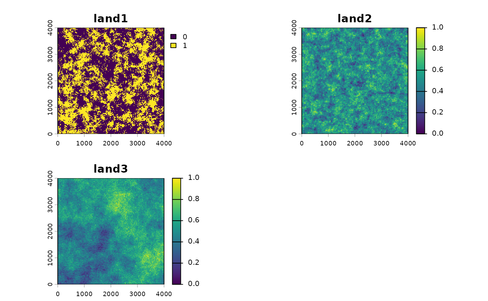
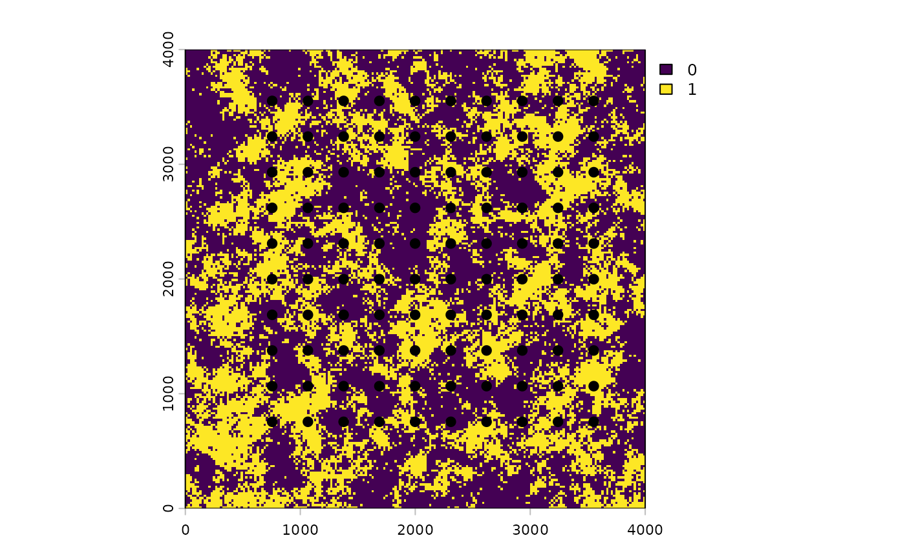
kernel_prep
kernel_prep() is the first step of every
multiScaleR analysis. It does two things:
For observations collected against different annual maps, use
kernel_prep_by_group() in its place. That function extracts
each observation from its assigned map, then creates shared distance
bins and pooled scaling parameters. See
vignette("year-specific-rasters", package = "multiScaleR").
- For each sample point, it extracts raster values at every cell
within
max_D(the maximum search radius) and computes their distances. These are stored compactly (as a dense or sparse matrix per point, whichever is smaller). - It computes an initial set of distance-weighted covariate values at
each sample point using a starting σ (by default,
max_D / 2). These initial values are used to fit the starting regression model.
Choosing max_D: Set max_D
to a value you are confident exceeds the true scale of effect. If you
are uncertain, err on the side of being too large; the optimization will
find the right σ within that range. With the default distance binning
(see below), the optimization cost no longer grows with
max_D; the main tradeoffs of a large max_D are
the one-time extraction in kernel_prep() and the memory
used to store the extracted cells. If multiScale_optim()
warns that a σ estimate is near max_D, increase
max_D and re-run kernel_prep().
kernel_inputs <- kernel_prep(pts = pts,
raster_stack = land_rast,
max_D = 1700,
kernel = 'gaussian',
verbose = FALSE)
kernel_inputs
#>
#> There are 100 observations at 3 spatial covariate(s):
#> land1 land2 land3
#>
#> The specified kernel is:
#> gaussian
#>
#> Number of elements:
#> 13111
#> Distance binning:
#> enabled (256 distance bins per covariate)
#> Minimum Distance:
#> 20
#> Maximum Distance:
#> 1700
#> Unit Conversion:
#> 1700The kernel_inputs object holds the distance data and the
initial kernel-weighted covariate values (in
kernel_inputs$kernel_dat). These kernel-weighted values are
scaled and centered (mean 0, SD 1 across sample points) so that
regression coefficients are comparable across covariates.
Performance and memory for large datasets
By default (bin = TRUE), kernel_prep()
precomputes distance-binned summaries of each kernel-weighted covariate.
During multiScale_optim() these let the optimizer evaluate
kernel-weighted means in O(nbins) per point instead of
iterating every raster cell in the buffer, so optimization speed becomes
essentially independent of max_D. The binning is controlled
by nbins (default 256) and reproduces the exact scale
estimates to several significant figures; set bin = FALSE
to force the exact per-cell path.
For large point sets or a large max_D, where the stored
cell data dominate memory, add store_cell_data = FALSE to
drop the per-cell data after binning, keeping only the compact summaries
needed to optimize, profile, and project:
kernel_inputs <- kernel_prep(pts = pts,
raster_stack = land_rast,
max_D = 1700,
kernel = 'gaussian',
store_cell_data = FALSE,
verbose = FALSE)This “lean” mode can shrink the stored object by one to two orders of
magnitude. It is available when every covariate is kernel-weighted;
cell-level data are retained automatically when landscape or surface
metrics are present, because those require the full spatial detail. Use
estimate_multiscale_ram() to gauge the footprint and a
conservative parallel worker count before running.
Next, combine the kernel-weighted covariate values with the response data to build the data frame for model fitting:
df <- data.frame(dat,
kernel_inputs$kernel_dat)
str(df)
#> 'data.frame': 100 obs. of 5 variables:
#> $ counts: int 0 2 7 3 2 0 2 1 1 1 ...
#> $ site : num 0.992 1.992 0.3 -0.623 1.891 ...
#> $ land1 : num 0.959 0.565 -0.132 -0.73 1.238 ...
#> $ land2 : num -0.15 0.726 0.513 0.623 0.958 ...
#> $ land3 : num 0.6937 0.9235 0.455 -0.0789 1.0492 ...Fit the initial (starting) model. This model uses
the initial kernel-weighted values and establishes the model structure
(formula, family, random effects) that will be inherited by
multiScale_optim(). The coefficients from this model are
only starting values; optimizing with multiScale_optim()
will update both the regression coefficients and σ simultaneously.
mod0 <- glm(counts ~ site + land1 + land2 + land3,
family = poisson(),
data = df)
summary(mod0)
#>
#> Call:
#> glm(formula = counts ~ site + land1 + land2 + land3, family = poisson(),
#> data = df)
#>
#> Coefficients:
#> Estimate Std. Error z value Pr(>|z|)
#> (Intercept) 0.52794 0.08307 6.355 2.08e-10 ***
#> site -0.02191 0.11116 -0.197 0.844
#> land1 -0.38930 0.08881 -4.383 1.17e-05 ***
#> land2 0.77890 0.14288 5.451 5.00e-08 ***
#> land3 0.09565 0.13016 0.735 0.462
#> ---
#> Signif. codes: 0 '***' 0.001 '**' 0.01 '*' 0.05 '.' 0.1 ' ' 1
#>
#> (Dispersion parameter for poisson family taken to be 1)
#>
#> Null deviance: 224.24 on 99 degrees of freedom
#> Residual deviance: 165.40 on 95 degrees of freedom
#> AIC: 372.08
#>
#> Number of Fisher Scoring iterations: 5Analysis
multiScale_optim
We are now ready to optimize the scales of effect with
multiScale_optim(). This function searches over σ values
for each raster layer (and simultaneously updates regression
coefficients) to find the combination that maximizes the likelihood of
the fitted model. The full guide shows the optimization calls and then
loads cached fitted objects bundled with the package so the printed
summaries and plots remain available without making CRAN rebuild the
slow fits.
Parallelization: This vignette uses serial optimization. Parallel runs can be faster for expensive model refits, but each worker can require its own copy of the optimization payload. Check the RAM estimate before choosing
n_cores.
Parallel RAM guard: Version 0.7.4 and later stop,
rather than warn and continue, when a requested
n_cores > 1 exceeds the estimated RAM-based worker
limit. The check runs before screened starts and worker creation. The
error reports the requested count, estimated peak memory, backend, and
RAM-based limit. It does not silently lower the worker count or restart
the analysis in serial mode.
# Include the fitted model so the estimate covers the worker optimization context.
ram <- estimate_multiscale_ram(kernel_inputs, fitted_mod = mod0, n_cores = 3)
print(ram)
ram$component_bytes # Inspect which objects dominate the estimated payload.
# A serial run avoids copying the payload to parallel workers.
opt_serial <- multiScale_optim(mod0, kernel_inputs, n_cores = 1)How to read the RAM report: Compare the requested
count with max_cores_by_ram and inspect
peak_parallel_estimate. These are conservative estimates,
not observed memory use. The recommendation has a minimum of one, which
does not guarantee that serial execution fits in RAM. A run at or below
the limit can still run out of memory during a refit. If RAM detection
or estimation is unavailable, the guard cannot enforce a limit and does
not block execution.
For a large kernel-only preparation, rebuild the original
kernel_prep() call with
bin = TRUE, store_cell_data = FALSE, keeping its other
settings unchanged, then inspect the estimate again. This lean mode
retains the binned summaries used during optimization. It is not
available for landscape or surface metrics; those need cell-level data.
Do not delete components manually or reduce a scientifically chosen
max_D merely to bypass the guard.
opt1 <- multiScale_optim(fitted_mod = mod0,
kernel_inputs = kernel_inputs)When the likelihood surface is broad or the model includes several
landscape covariates, a single default start can occasionally settle on
a local optimum. The screened start strategy provides a lightweight
diagnostic alternative. It scouts log-spaced σ values, optionally runs a
few short screening optimizations, and then launches one full
optimization from the best candidate. The marginal σ scans are serial,
but the short screening attempts use n_cores when parallel
optimization is requested. On Windows, those short attempts run through
PSOCK workers just like the full optimization, so the same cluster and
serialization considerations apply. Use set.seed() before
screened starts when you want reproducible jittered candidates.
set.seed(1)
opt1_screen <- multiScale_optim(
fitted_mod = mod0,
kernel_inputs = kernel_inputs,
start_strategy = "screen",
screen_n_sigma = 4,
screen_n_jitter = 2,
screen_maxit = 5
)The reduced screening settings above are useful for quick checks and examples. For final analyses, the defaults provide a broader screen while still running only one full optimization.
We get two helpful warning messages:
- The estimated σ for one raster layer is near
max_D, meaning the optimization is pushing against the boundary of the search space. This suggests that either the true scale of effect is large, or that the variable has a weak or absent relationship with the response and optimization is poorly constrained. The warning suggests increasingmax_Dinkernel_prep(). - The standard error for one or more σ estimates is large relative to the point estimate: a sign of imprecision, often caused by weak signal or too small a sample size.
Let’s look at our results.
summary(opt1)
#>
#> Call:
#> multiScale_optim(fitted_mod = mod0, kernel_inputs = kernel_inputs,
#> verbose = FALSE)
#>
#>
#> Kernel used:
#> gaussian
#>
#> ***** Optimized Scale of Effect *****
#>
#> Mean SE 2.5% 97.5%
#> land1 248.2048 34.16873 180.3713 316.0383
#> land2 538.5196 50.76490 437.7385 639.3007
#> land3 538.9062 309.85559 20.0000 1154.0473
#>
#>
#> ====================================
#>
#> ***** Optimized Scale of Effect -- Distance *****
#> Scale distances (map units) at 90%, two definitions.
#>
#> 2D, radius of the circle for the ideal untruncated kernel (selected):
#> Mean 2.5% 97.5%
#> land1 532.64 387.07 678.21
#> land2 1155.64 939.37 1371.92
#> land3 1156.47 42.92 2476.55
#>
#> 1D, along a line through the point (comparison):
#> Mean 2.5% 97.5%
#> land1 408.26 296.68 519.84
#> land2 885.79 720.02 1051.56
#> land3 886.42 32.90 1898.24
#>
#>
#> ====================================
#>
#> ***** Fitted Model Summary *****
#>
#>
#> Call:
#> glm(formula = counts ~ site + land1 + land2 + land3, family = poisson(),
#> data = data)
#>
#> Coefficients:
#> Estimate Std. Error z value Pr(>|z|)
#> (Intercept) 0.37646 0.09260 4.065 4.80e-05 ***
#> site 0.06423 0.09891 0.649 0.5161
#> land1 -0.50811 0.08014 -6.340 2.29e-10 ***
#> land2 0.75712 0.09940 7.617 2.60e-14 ***
#> land3 0.18075 0.09993 1.809 0.0705 .
#> ---
#> Signif. codes: 0 '***' 0.001 '**' 0.01 '*' 0.05 '.' 0.1 ' ' 1
#>
#> (Dispersion parameter for poisson family taken to be 1)
#>
#> Null deviance: 224.24 on 99 degrees of freedom
#> Residual deviance: 106.99 on 95 degrees of freedom
#> AIC: 313.67
#>
#> Number of Fisher Scoring iterations: 5
#>
#>
#> WARNING!!!
#> The estimated scale of effect approaches or exceeds the current search extent.
#> Consider increasing max_D in `kernel_prep` to >= 1772.84 to ensure accurate estimation of scale.
#>
#>
#> WARNING!!!
#> The standard error of one or more `sigma` estimates is >= 50% of the estimated mean value.
#> Carefully assess whether or not this variable is meaningful in your analysis and interpret with caution.
#>
#>
#>
#> ***** Follow-up recommendation *****
#> Recommended `max_D`: 1772.84
#> Recommended starting `sigma` values:
#> land1 land2 land3
#> 248.2048 538.5196 538.9062
#>
#> Action:
#> Refit from the optimized parameters and address the flagged diagnostics.How to read the summary() output:
The top of the output shows the estimated σ (scale parameter) for
each raster layer, with standard errors and 95% confidence intervals.
Below the σ estimates is the effective distance, which converts
σ into a distance in map units (meters in this case), reported two ways.
The selected 2D table appears first by default and
gives the radius of the circle containing the requested proportion
(default: 90%) of the weight of an ideal, untruncated kernel on a plane,
about 2.15σ for a Gaussian kernel. The 1D comparison
table gives the distance enclosing that proportion along a line through
the sample point, about 1.65σ. A Gaussian kernel with σ = 250 m has a 2D
radius of about 536 m and a 1D distance of about 411 m. Raster edges,
missing cells, and the max_D cutoff can change the share
realized in your data, so report the definition and extraction
extent.
The returned opt_dist and its alias
opt_distance now follow the selected dimension, rather than
always holding 1D distances as they did through version 0.7.3. Use
summary(opt2, dimension = "1d") to recover the old values.
For scripts that need a fixed definition regardless of the reporting
selection, extract summary(opt2)$opt_dist_1d or
summary(opt2)$opt_dist_2d. Both named tables remain
available with either selection. Hard-radius covariates report their
full buffer radius in both tables; they are not converted to a
cumulative-weight distance.
The bottom of the output is the standard model summary from your
regression (GLM in this case), showing regression coefficients, standard
errors, and p-values for each covariate, exactly as you would see from
summary(glm(...)).
Confidence intervals on σ: delta method vs. profile likelihood
By default, confidence intervals on σ are computed using the
delta method: a first-order Taylor approximation that
treats the log-likelihood surface as locally quadratic near the optimum
and derives the CI from the curvature (Hessian) of that surface.
Delta-method CIs are fast to compute and work well when the likelihood
surface is smooth and roughly symmetric around the estimate. They are
reported alongside the standard error in the default
summary() output.
However, the log-likelihood surface for σ is often asymmetric,
especially when the scale parameter is near max_D, when
sample sizes are small, or when the effect size is weak. In these
situations the delta-method CI can be misleading: the lower and upper
bounds may not accurately reflect the true uncertainty in each
direction. Profile-likelihood CIs address this by
tracing the likelihood surface directly: for each boundary value of σ,
the optimizer finds the configuration of all other parameters that
maximizes the likelihood, then identifies where that profile drops by
the critical chi-squared quantile (1.92 log-likelihood units for a 95%
CI). Profile CIs are therefore more reliable when the surface is
irregular, at the cost of additional computation.
To request profile-likelihood CIs, pass profile = TRUE
to summary():
For landscape metrics and unweighted surface metrics whose radius
changes in discrete cell steps, the Hessian standard error is not a
useful measure of uncertainty. Their default summary displays
NA for the standard error and Wald interval. Use the
profile-likelihood interval and report the parameter as a radius in map
units. Candidate scales that make a covariate undefined at modeled
observations are rejected so likelihoods retain the same sample.
summary(opt1, profile = TRUE)Profile CIs are recommended whenever:
- a delta-method CI is wide or asymmetric relative to the point estimate,
- an estimated σ is near
max_D(boundary constraint), - sample size is small (fewer than ~75 sites), or
- you intend to report formal uncertainty bounds in a manuscript.
Wide CIs on σ in either method indicate that the data do not strongly constrain the scale of effect for that variable. This may mean the variable has a weak relationship with the response, the sample size is insufficient, or the variable should be excluded from the model.
For our full model: site has no apparent effect,
land1 has a negative effect, land2 has a
positive effect, and land3 shows a weak positive effect.
Crucially, the σ for land3 is large and
imprecisely estimated (wide CI). This is a red flag: when a variable has
no true relationship with the response, the optimization often fails to
find a well-defined σ and will wander toward large values.
With this simulated data, we know that land3 has no
effect on counts. Let’s fit a model without it.
## Optimize
opt2 <- multiScale_optim(fitted_mod = mod0_2,
kernel_inputs = kernel_inputs)No warnings! Let’s look at our results.
summary(opt2)
#>
#> Call:
#> multiScale_optim(fitted_mod = mod0_2, kernel_inputs = kernel_inputs,
#> verbose = FALSE)
#>
#>
#> Kernel used:
#> gaussian
#>
#> ***** Optimized Scale of Effect *****
#>
#> Mean SE 2.5% 97.5%
#> land1 238.4880 33.12452 172.7364 304.2397
#> land2 499.5767 47.47055 405.3484 593.8050
#>
#>
#> ====================================
#>
#> ***** Optimized Scale of Effect -- Distance *****
#> Scale distances (map units) at 90%, two definitions.
#>
#> 2D, radius of the circle for the ideal untruncated kernel (selected):
#> Mean 2.5% 97.5%
#> land1 511.79 370.69 652.89
#> land2 1072.07 869.86 1274.29
#>
#> 1D, along a line through the point (comparison):
#> Mean 2.5% 97.5%
#> land1 392.28 284.13 500.43
#> land2 821.73 666.74 976.72
#>
#>
#> ====================================
#>
#> ***** Fitted Model Summary *****
#>
#>
#> Call:
#> glm(formula = counts ~ site + land1 + land2, family = poisson(),
#> data = data)
#>
#> Coefficients:
#> Estimate Std. Error z value Pr(>|z|)
#> (Intercept) 0.39291 0.09098 4.319 1.57e-05 ***
#> site 0.17482 0.08246 2.120 0.034 *
#> land1 -0.48628 0.07923 -6.138 8.38e-10 ***
#> land2 0.62571 0.07245 8.636 < 2e-16 ***
#> ---
#> Signif. codes: 0 '***' 0.001 '**' 0.01 '*' 0.05 '.' 0.1 ' ' 1
#>
#> (Dispersion parameter for poisson family taken to be 1)
#>
#> Null deviance: 224.24 on 99 degrees of freedom
#> Residual deviance: 109.57 on 96 degrees of freedom
#> AIC: 314.25
#>
#> Number of Fisher Scoring iterations: 5
#>
#>
#>
#> ***** Follow-up recommendation *****
#> Recommended `max_D`: 1700
#> Recommended starting `sigma` values:
#> land1 land2
#> 238.4880 499.5767
#>
#> Action:
#> Use the optimized parameters as efficient starting values if refitting.The default summary() uses delta-method confidence
intervals. Because this model is well-behaved (no boundary warnings,
reasonable sample size), the delta-method CIs should be reliable here.
For a more conservative check, you can compare them to
profile-likelihood CIs:
summary(opt2, profile = TRUE)The true data-generating values were (see section 3):
| Parameter | True value | Recovery? |
|---|---|---|
land1 σ |
250 m | Check CI |
land2 σ |
500 m | Check CI |
land1 β |
−0.5 | Check CI |
land2 β |
0.7 | Check CI |
Overall, we do a good job recovering both the regression coefficients (β) and the scales of effect (σ) within reasonable uncertainty bounds. This is reassuring but also a good reminder: with real data, you will not have ground truth to check against. Careful model selection and biological reasoning are your guides.
Visualizing the kernel decay. The
plot() method shows how the kernel weight for each
landscape variable falls off with distance. Its vertical line now marks
the 2D radius containing 90% of ideal planar weight by default, matching
kernel_dist(opt2) and the selected summary distance. The
annotation states sigma, the dimension, the radius, and its converted
interval. It does not mean that 90% of the area under the displayed
decay curve lies to the left of the marker. Use
plot(opt2, dimension = "1d") for the original line-based
distance and interval.
## Kernel function
plot(opt2)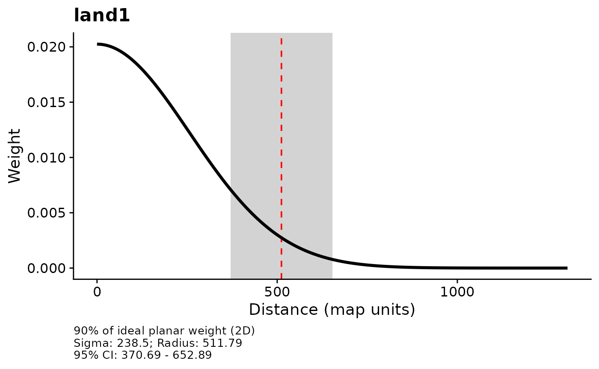
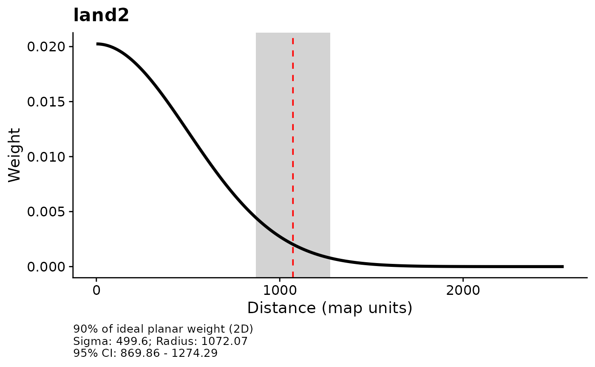
## Kernel function; 99% contribution
plot(opt2, prob = 0.99)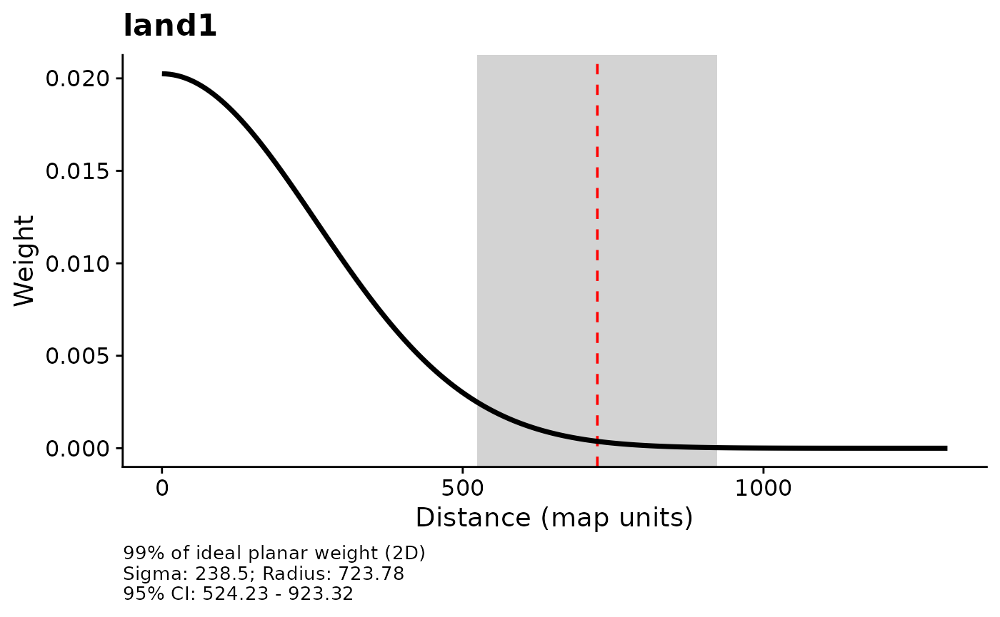
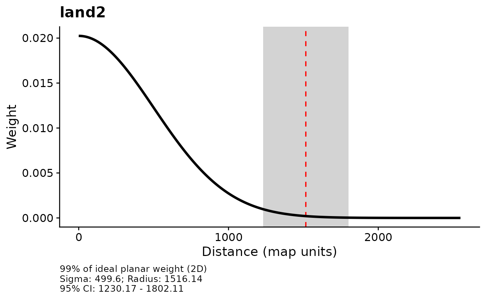
# Explicit switches preserve the original line-based reporting in existing scripts.
kernel_dist(opt2, dimension = "1d")
summary(opt2, dimension = "1d")
print(opt2, dimension = "1d")
plot(opt2, dimension = "1d")
plot_kernel(sigma = 300, kernel = "gaussian", dimension = "1d")Visualizing marginal covariate effects.
plot_marginal_effects() shows the estimated effect of each
covariate on the response, holding other covariates at their mean
values. These are the standard partial effect plots from the regression
model, applied to the optimally-scaled covariate values.
plot_marginal_effects(opt2)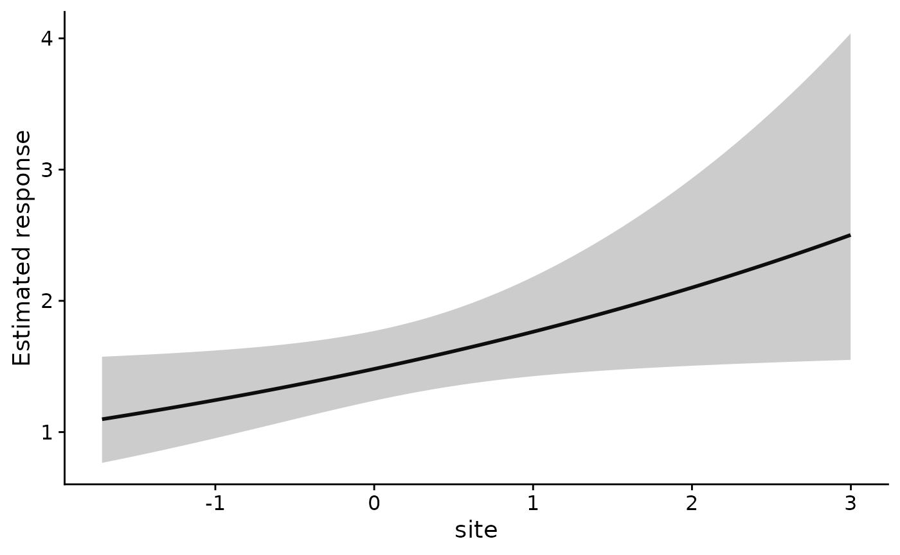
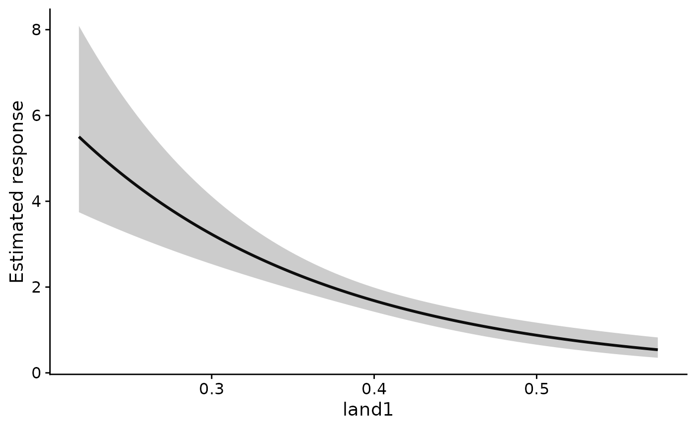
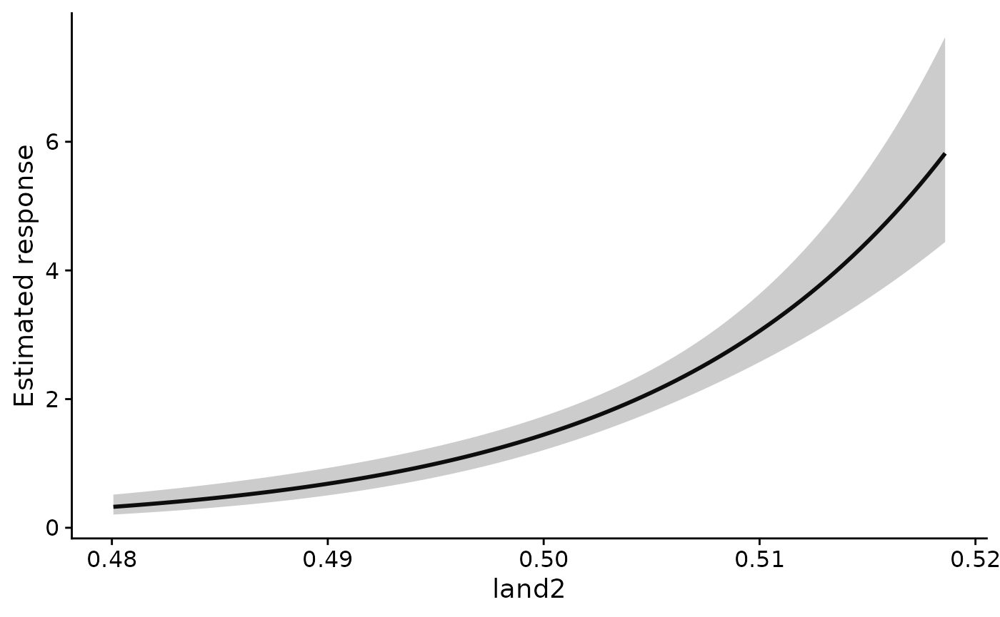
Profiling the likelihood surface.
profile_sigma() provides a diagnostic view of how the model
fit changes as σ varies across its search range for each covariate,
while all other σ values are held at their optimized values. Rather than
reporting a single point estimate with an interval, it shows the full
shape of the AICc (or log-likelihood) surface across the parameter
space.
Profiling must be able to refit the stored model. If a model was
created inside a temporary function or loop, keep its formula and data
available to the model call. Write the formula directly in the fitting
call when possible, or provide a refit_fn to
multiScale_optim(). If all refits fail,
profile_sigma() stops with an error instead of displaying
optimizer penalties as a likelihood profile.
profile_sigma() can evaluate covariate profiles in
parallel via n_cores. Because each scaled surface (spatial
covariate) is profiled independently, setting n_cores to
the number of scaled surfaces is often the most efficient choice when
your computer has enough available resources.
This is useful in several situations:
- Verifying a well-defined optimum: A clear trough in the AICc surface centered near the optimized σ suggests that the scale of effect is precisely estimated. A flat or monotone profile indicates the data do not strongly constrain σ for that variable.
-
Asymmetry diagnostics: If the surface drops steeply
on one side and gradually on the other, the likelihood is asymmetric and
delta-method CIs may not capture the uncertainty accurately.
Profile-likelihood CIs (via
summary(..., profile = TRUE)) are more appropriate in this case. -
Boundary concerns: When the trough is near
max_D, the surface may be truncated by the search boundary rather than identified by the data. This is a visual confirmation of the warning message frommultiScale_optim().
Intervals are log-spaced so that evaluation is denser at smaller σ values, where the surface tends to change more rapidly, and sparser at larger values where it is typically flatter.
n_profile_cores <- min(length(opt2$scale_est$Mean),
max(1L, parallel::detectCores(logical = FALSE)))
prof2 <- vignette_cache$guide$prof2
plot(prof2)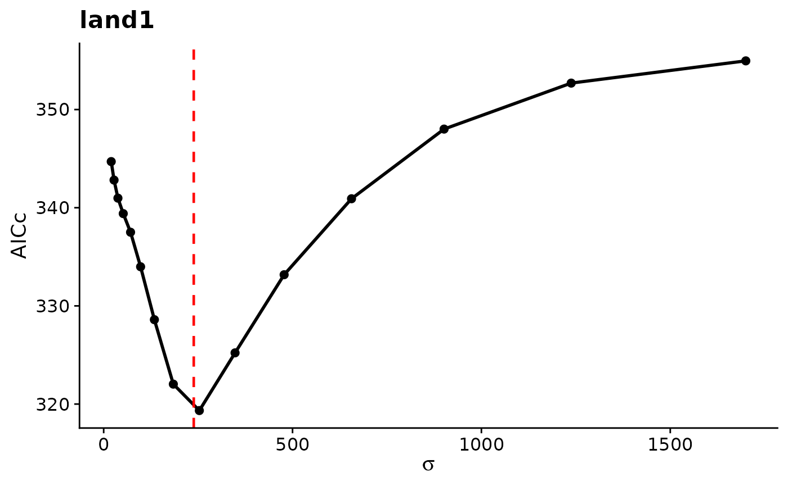
AICc profile across sigma for each spatial covariate. The red dashed line marks the optimized sigma.
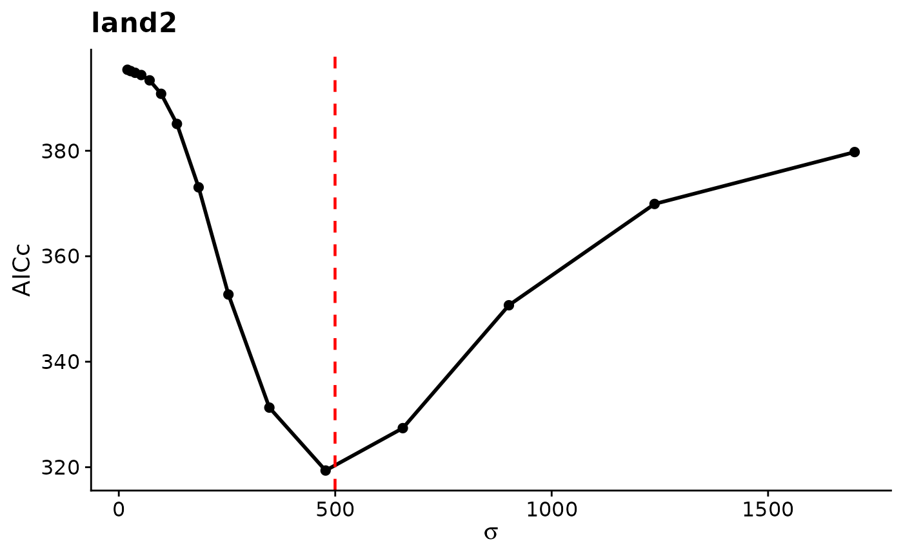
AICc profile across sigma for each spatial covariate. The red dashed line marks the optimized sigma.
For opt2, the profile confirms a clear, well-defined
minimum in AICc near the optimized σ for both land1 and
land2, consistent with the absence of boundary warnings and
the narrow confidence intervals reported by summary().
Compare this to the full model (opt1), which included the
uninformative land3 covariate: that profile would show a
shallow or absent trough, reflecting the poor identifiability of σ when
a variable has no true relationship with the response.
We can also apply the optimized kernel to the full raster surfaces. This is a key step if you want to generate spatially explicit predictions across the landscape.
kernel_scale.raster() smooths each raster layer using
the estimated σ from the optimization. When
scale_center = TRUE, the smoothed values are standardized
using the mean and SD from the sample points, matching the scaling used
during model fitting. This ensures that terra::predict()
receives covariate values in the same space as the training data.
For a model containing offset(log(n_weeks)), the
projected raster stack contains a layer named n_weeks with
value 1 by default. Set offset_values = c(n_weeks = 4) to
predict for four weeks of exposure. Direct offsets default to zero.
Choose values that match the quantity you want to predict.
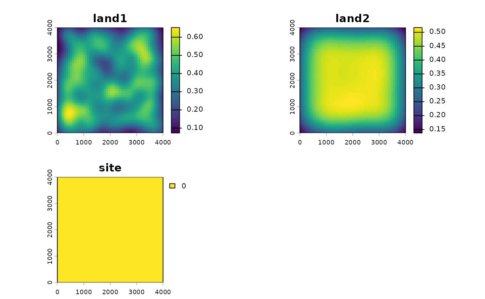
Note: Because
siteis a non-spatial covariate (a site-level variable, not a raster), a constant dummy raster is created for it. This allows theSpatRasterobject to be passed directly toterra::predict(), which requires all model covariates to be present. See theSpatial Projection and Clampingvignette for a detailed treatment of projection, including how to handle cases where projected covariate values fall outside the range of the training data.
Kernels
Data were simulated from a Gaussian kernel, but you can optimize using other kernels and compare model performance. The code below is shown as an interactive template rather than run during vignette builds because it fits several additional optimization models. Starting values may be needed when using the exponential power kernel due to convergence issues.
## Negative Exponential
exp_inputs <- kernel_prep(pts = pts,
raster_stack = land_rast,
max_D = 1700,
kernel = 'exp',
verbose = FALSE)
## Exponential Power
expow_inputs <- kernel_prep(pts = pts,
raster_stack = land_rast,
max_D = 1700,
kernel = 'expow',
verbose = FALSE)
## Fixed width buffer
fixed_inputs <- kernel_prep(pts = pts,
raster_stack = land_rast,
max_D = 1700,
kernel = 'fixed',
verbose = FALSE)Optimize model with alternative kernels
opt_exp <- multiScale_optim(fitted_mod = mod0_2,
kernel_inputs = exp_inputs)
## Starting values needed
opt_expow <- multiScale_optim(fitted_mod = mod0_2,
kernel_inputs = expow_inputs,
par = c(500/expow_inputs$unit_conv,
500/exp_inputs$unit_conv,
5,10))
opt_fixed <- multiScale_optim(fitted_mod = mod0_2,
kernel_inputs = fixed_inputs)If you explore each of the outputs, you will usually see similar scale estimates for this simulated example. The main practical lesson is that the Gaussian kernel is the default because it is stable, simple, and usually adequate; alternative kernels are most useful when there is a clear biological reason to test a different distance-decay shape.
Model Selection
Why standard AIC is not enough
When you optimize σ, you are estimating an additional parameter
beyond the regression coefficients. Standard AIC from the base model
does not account for this extra complexity. multiScaleR
uses AICc (corrected for small samples) and BIC tables that account for
the σ parameters in the penalty term. This is important: comparing
models with aic_tab() or bic_tab() gives a
fair comparison across models with different numbers of spatial
covariates.
With multiScaleR it is possible to create AIC(c) or BIC
tables from lists of fitted models. The examples below are not evaluated
during vignette builds because each candidate model requires another
scale optimization.
mod_list <- list(opt2,
opt_exp,
opt_expow,
opt_fixed)
## AIC table
aic_tab(mod_list)
## BIC table
bic_tab(mod_list)The questionably-fitting exponential power model is best-supported by AICc ranking while the Gaussian model is best-supported by BIC. Because of the added complexity (extra parameter) with the exponential power kernel, uncertain optimization, and general equivalency to other models, we should probably lean toward the simpler Gaussian kernel model. This example highlights the challenges that may be encountered when trying to parse different kernels for estimating scales of effect. From observations of performance with simulated data, use of different kernels tends to result in a similar final model and interpretation of variable effects. This, in part, is why the Gaussian kernel is the default, and likely will meet most researcher needs.
Of greater interest is using model selection to identify the best supported model in terms of parameterization (not kernel used).
## Landscape only effect
mod0_3 <- glm(counts ~ land1 + land2,
family = poisson(),
data = df)
## Landscape 1 only effect
mod0_4 <- glm(counts ~ land1,
family = poisson(),
data = df)
## Landscape 2 only effect
mod0_5 <- glm(counts ~ land2,
family = poisson(),
data = df)
## Landscape 3 only effect
mod0_6 <- glm(counts ~ land3,
family = poisson(),
data = df)
## Site only effect
## No multiScaleR optimization
mod0_7 <- glm(counts ~ site,
family = poisson(),
data = df)Optimize scale for each alternative model
opt3 <- multiScale_optim(fitted_mod = mod0_3,
kernel_inputs = kernel_inputs)
opt4 <- multiScale_optim(fitted_mod = mod0_4,
kernel_inputs = kernel_inputs)
opt5 <- multiScale_optim(fitted_mod = mod0_5,
kernel_inputs = kernel_inputs)
opt6 <- multiScale_optim(fitted_mod = mod0_6,
kernel_inputs = kernel_inputs)Put models into list and assess.
Model selection tables clearly show that the inclusion of scaled landscape variables is important, however information criterion may not have the greatest resolution or power to differentiate among competing models. Analyses will likely require a critical, holistic assessment of information criterion, parameter effect sizes, and precision in scale of effect estimates (i.e. sigma).
The challenge of identifying ‘significant’ scale relationships was
also noted by Lowe et al., and the R package scalescape has
a bootstrap function to determine the significance of parameters within
the regression model. Such procedures are not currently implemented in
multiScaleR.
Optimization with unmarked
Among the model classes that multiScaleR can be used to
optimize are those from unmarked. We will use the
simulation functions from the package to create data for this analysis.
First, we will simulate and visualize raster surfaces.
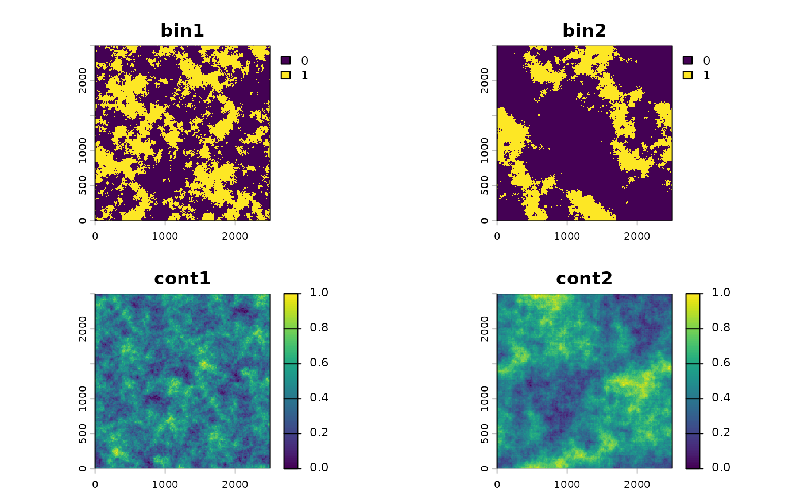
Poisson Count Model
We’ll use the bin1 and cont2 surfaces for
our data simulation. First, we’ll simulate count data with a Poisson
distribution. For the unmarked data simulation, we need to
specify the count model intercept (alpha), and regression
coefficients that describe the effect of the raster layers
(beta), the scale of effect (sigma), number of
survey points on the landscape (n_points), the number of
replicate surveys conducted (n_surv), the detection
probability (det; here, the probability of detecting an
individual), and the maximum distance to consider in the analysis
(max_D).
rs <- terra::subset(rs, c(1,4))
s_dat <- sim_dat_unmarked(alpha = 1,
beta = c(0.75,-0.75),
kernel = 'gaussian',
sigma = c(75, 150),
n_points = 75,
n_surv = 5,
det = 0.5,
type = 'count',
raster_stack = rs,
max_D = 550,
user_seed = 555)
plot(s_dat$df$y ~ s_dat$df$bin1)
plot(s_dat$df$y ~ s_dat$df$cont2)We can see that we have simulated a positive effect of
bin1 on counts and negative effect of cont2 on
counts. We can now prepare data for unmarked and optimize
scale of effect with multiScaleR.
library(unmarked)
kernel_inputs <- kernel_prep(pts = s_dat$pts,
raster_stack = rs,
max_D = 550,
kernel = 'gaus',
verbose = FALSE)
umf <- unmarkedFramePCount(y = s_dat$y,
siteCovs = kernel_inputs$kernel_dat)
## Base unmarked model
mod0_umf.p <- unmarked::pcount(~1 ~bin1 + cont2,
data = umf,
K = 100)
## The pcount optimization refits a K = 100 N-mixture model at every optimizer
## step (~4 min), so a small precomputed result -- built from this same
## simulated data -- is loaded here to keep the vignette build fast. Every other
## model in this vignette is fit live. Regenerate the snapshot with
## data-raw/generate_pcount_vignette_object.R, or run it live with:
## opt_umf.p <- multiScale_optim(mod0_umf.p, kernel_inputs)
opt_umf.p <- readRDS(system.file("extdata", "opt_umf_p.rds",
package = "multiScaleR"))Compare optimized results with simulated values. Note that the
detection reported by unmarked is on the logit scale, so
must be back-transformed. Overall, both the scale parameters and the
Poisson count model parameters were reasonably recovered.
For repeated site-year rows, the preparation object still has one row
per unique spatial site. Add a site ID to the fitted model’s
siteCovs and pass one matching ID per prepared site through
join_by. The site IDs in the model may repeat and may
appear in any row order. The code below shows the required data layout;
replace counts_by_year with the survey count matrices, each
having sites in the same order as
kernel_inputs$kernel_dat.
# Spatial site IDs follow the point order used by kernel_prep().
site_id <- seq_len(nrow(kernel_inputs$kernel_dat))
join_by <- data.frame(site_id = site_id)
# Each count matrix has one row per site and one column per visit.
y_stacked <- do.call(rbind, counts_by_year)
site_row <- rep(site_id, times = length(counts_by_year))
site_covs <- kernel_inputs$kernel_dat[site_row, , drop = FALSE]
site_covs$site_id <- site_id[site_row]
site_covs$Year <- factor(rep(seq_along(counts_by_year), each = length(site_id)))
umf_years <- unmarked::unmarkedFramePCount(y = y_stacked,
siteCovs = site_covs)
mod_years <- unmarked::pcount(~Year ~ Year + bin1 + cont2, data = umf_years,
K = 100)
opt_years <- multiScale_optim(mod_years, kernel_inputs,
join_by = join_by)
# Factor Year is plotted by observed level; site_id remains a join key.
plot_marginal_effects(opt_years, type = "state")Check that the rows of y_stacked and
site_covs refer to the same site-year records before
fitting. Without join_by, model rows must match prepared
spatial sites one for one in the same order. An open-population
pcountOpen() model instead stores one row per site and the
repeated years across count columns; it can use the same static site
covariates without join_by. For either model type, examine
the scale profile and diagnostics() because sparse counts
can yield weakly identified scales.
summary(opt_umf.p)
#>
#> Call:
#> multiScale_optim(fitted_mod = mod0_umf.p, kernel_inputs = kernel_inputs)
#>
#>
#> Kernel used:
#> gaussian
#>
#> ***** Optimized Scale of Effect *****
#>
#> Mean SE 2.5% 97.5%
#> bin1 51.95081 9.191207 33.64099 70.26064
#> cont2 185.79542 37.254138 111.58137 260.00947
#>
#>
#> ====================================
#>
#> ***** Optimized Scale of Effect -- Distance *****
#> Scale distances (map units) at 90%, two definitions.
#>
#> 2D, radius of the circle for the ideal untruncated kernel (selected):
#> Mean 2.5% 97.5%
#> bin1 111.48 72.19 150.78
#> cont2 398.71 239.45 557.97
#>
#> 1D, along a line through the point (comparison):
#> Mean 2.5% 97.5%
#> bin1 85.45 55.33 115.57
#> cont2 305.61 183.54 427.68
#>
#>
#> ====================================
#>
#> ***** Fitted Model Summary *****
#>
#>
#> Call:
#> pcount(formula = ~1 ~ bin1 + cont2, data = inputs$data, K = 100,
#> mixture = "P")
#>
#> Abundance (log-scale):
#> Estimate SE z P(>|z|)
#> (Intercept) 1.003 0.0974 10.29 7.42e-25
#> bin1 0.707 0.0684 10.33 5.03e-25
#> cont2 -0.680 0.0695 -9.79 1.28e-22
#>
#> Detection (logit-scale):
#> Estimate SE z P(>|z|)
#> 0.17 0.142 1.2 0.231
#>
#> AIC: 991.3024
#> Number of sites: 75
#>
#>
#> WARNING!!!
#> The estimated scale of effect approaches or exceeds the current search extent.
#> Consider increasing max_D in `kernel_prep` to >= 611.22 to ensure accurate estimation of scale.
#>
#>
#>
#> ***** Follow-up recommendation *****
#> Recommended `max_D`: 611.22
#> Recommended starting `sigma` values:
#> bin1 cont2
#> 51.95081 185.79542
#>
#> Action:
#> Refit from the optimized parameters and address the flagged diagnostics.
plogis(opt_umf.p$opt_mod@estimates@estimates$det@estimates[[1]])
#> [1] 0.5424101Assess kernel and effects plots
For unmarked models, marginal-effect panels use the
variables in the selected state or abundance formula. Factor contrasts
such as Year2 are coefficient labels, not separate data
columns. Version 0.7.4 handles the factor itself and selects numeric
columns by name, including when join_by links repeated
site-year rows. Unused site keys and detection-only variables do not
receive state-effect panels.
In each panel, other numeric predictors are held at their observed
means and other factors at their first observed values. Site random
effects, when present, are set to zero (re.form = NA).
These are conditional predictions, not predictions averaged over sites,
years, or their random effects. To show a landscape curve separately for
each year, condition an explicit prediction grid on the desired year and
retain the fitted factor coding. Confidence intervals from these curves
condition on the selected landscape scale. See
?plot_marginal_effects for explicit-contrast handling.
plot(opt_umf.p)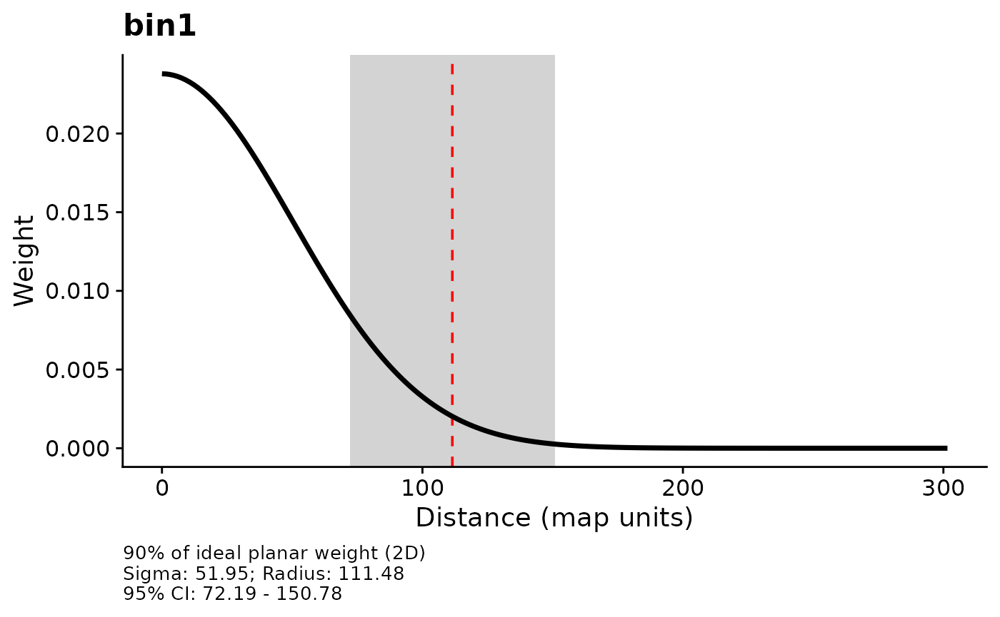
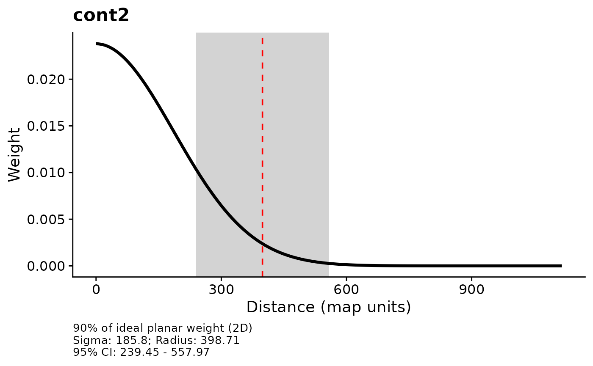
plot_marginal_effects(opt_umf.p)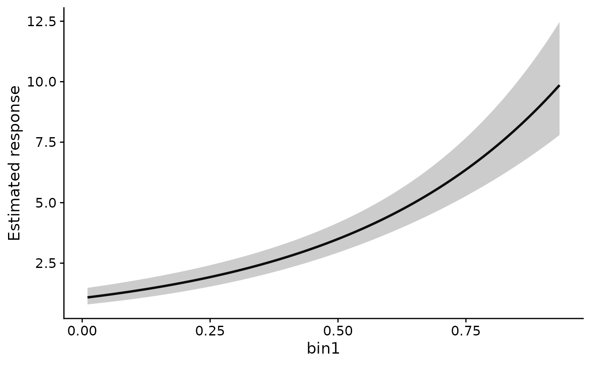
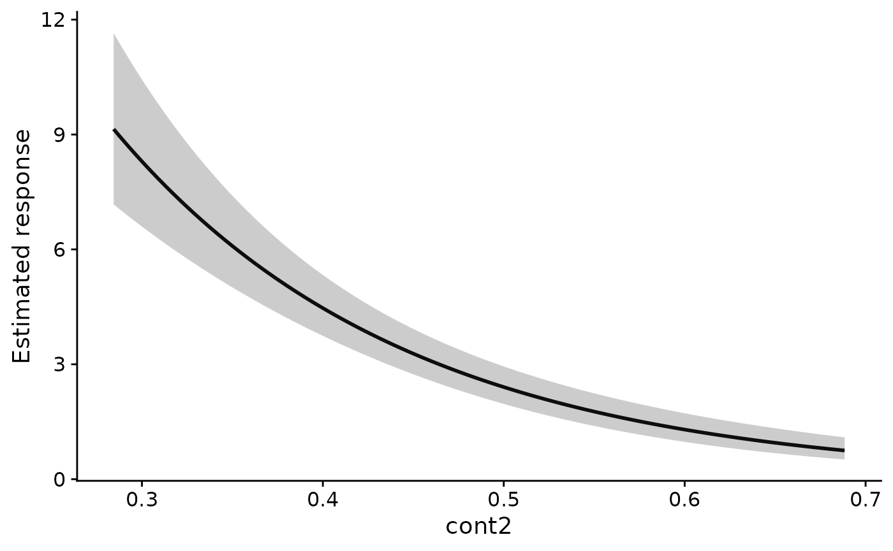
Project model
Finally, we may want to project our fitted model to the landscape to
make spatial predictions. To do this, we need to scale and center our
raster surfaces after applying our kernel transformations. The
SpatRaster object can then be used with the
terra::predict function. Depending upon the spatial
coverage of your sample points, you may find predicted values across a
broader region unrealistic. In these instances, you may need to clamp
the scaled rasters to be within a reasonable range of those observed in
your sample data.
## Project model
rast_scale.center <- kernel_scale.raster(raster_stack = rs,
multiScaleR = opt_umf.p,
scale_center = TRUE,
clamp = TRUE,
pct_mx = 0.00)
#>
#> Smoothing spatRaster variable 'bin1' from layer 'bin1' at sigma = 51
#>
#> Smoothing spatRaster variable 'cont2' from layer 'cont2' at sigma = 185
#> Warning: Could not inspect fitted model frame; site-level covariates were not
#> added.
plot(rast_scale.center)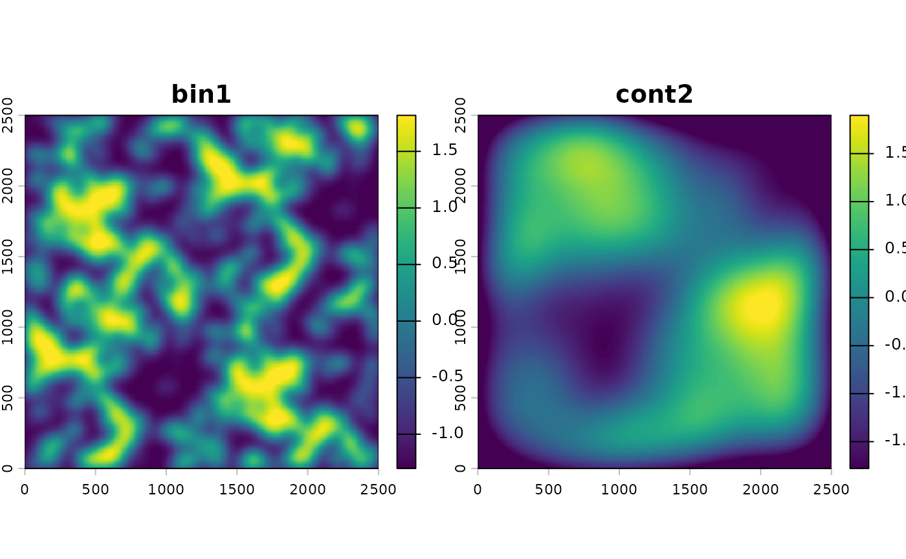
ab.mod_pred <- terra::predict(rast_scale.center,
opt_umf.p$opt_mod,
type = 'state')
plot(ab.mod_pred)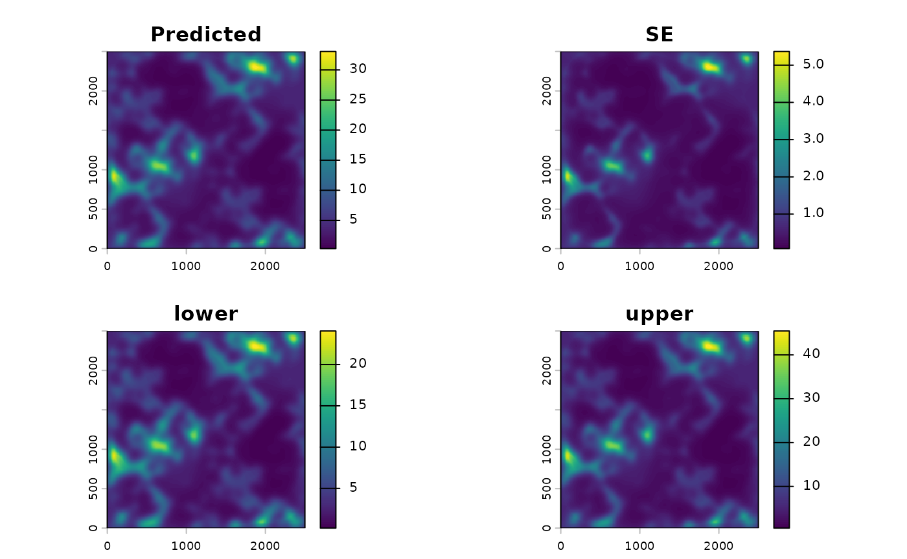
Binomial Occurrence Model
Now we’ll simulate occurrence data suitable for analysis with
unmarked. Preliminary experience has shown that simulation
parameters can be harder to recover when using an occupancy model in
unmarked with multiScaleR. We’ll use the same
raster surfaces. This section is not evaluated during vignette builds
because the repeated unmarked refits are computationally
expensive; copy the code into an interactive R session to run it.
s_dat.occ <- sim_dat_unmarked(alpha = 0.25,
beta = c(-0.75,1),
kernel = 'gaussian',
sigma = c(225, 75),
n_points = 250,
n_surv = 5,
det = 0.5,
type = 'occ',
raster_stack = rs,
max_D = 800,
user_seed = 555)
plot(s_dat.occ$df$y ~ s_dat.occ$df$bin1)
plot(s_dat.occ$df$y ~ s_dat.occ$df$cont2)Prepare inputs for use with multiScaleR
kernel_inputs <- kernel_prep(pts = s_dat.occ$pts,
raster_stack = rs,
max_D = 800,
kernel = 'gaus',
verbose = FALSE)
## Occupancy frame
umf <- unmarkedFrameOccu(y = s_dat.occ$y,
siteCovs = kernel_inputs$kernel_dat)
## Base unmarked model
(mod0_umf.occ <- unmarked::occu(~1 ~bin1 + cont2,
data = umf))
opt_umf.occ <- multiScale_optim(fitted_mod = mod0_umf.occ,
kernel_inputs = kernel_inputs)We did a decent job of recovering simulated values. Note that the
sample size was increased for this simulation. Previous explorations
suggested that smaller sample sizes (e.g., 100) did not contain enough
information to optimize the scales of effect (sigma). There
is opportunity for further exploration of data needs / limitations for
estimating scales of effect, especially related to more complex models
such those fit with unmarked.
Project model
## Project model
rast_scale.center <- kernel_scale.raster(raster_stack = rs,
multiScaleR = opt_umf.occ,
scale_center = TRUE,
clamp = T)
plot(rast_scale.center)
occ.mod_pred <- terra::predict(rast_scale.center,
opt_umf.occ$opt_mod,
type = 'state')
plot(occ.mod_pred)Other model classes
multiScaleR has been developed to work with any model
class that has an update function. It has been tested with models fit
using several different packages. If a particular model class does not
work, please let me know so I can trouble shoot and try to incorporate
functionality for it. In the example below, I demonstrate the fitting of
a zero-inflated model with the pscl package. Notably, the
zero-inflated term is a spatial variable that is also smoothed during
the analysis. This requires some manual processing to simulate data.
set.seed(12345)
rs <- sim_rast(user_seed = 999,
dim = 500, resolution = 30)
rs <- terra::subset(rs, c(1,3))
## Zero-inflated parameters
zi_alpha <- -0.25
zi_beta <- -1
n_points <- 400
alpha <- 0.5
beta <- 0.75
kernel <- 'gaussian'
sigma <- c(400, # For main effect, bin1
200) # For zero-inflated, cont1
StDev <- 2 # Negative binomial dispersion
## Generate random points
bnd <- buffer(vect(ext(rs[[1]])), -1000)
pts <- spatSample(x = rs[[1]],
size = n_points,
method = 'random',
ext = ext(bnd),
replace = F,
as.points = T)
kernel_out <- kernel_prep(pts = pts,
raster_stack = rs,
max_D = 1500,
kernel = kernel,
sigma = sigma,
verbose = FALSE)
## ZINB simulation
zi_prob <- plogis(zi_alpha + zi_beta*kernel_out$kernel_dat$cont1)
# Simulate zero-inflated counts
# 1 = excess zero, 0 = from Poisson
is_zero <- rbinom(length(zi_prob), size = 1, prob = zi_prob)
obs <- exp(alpha + beta*kernel_out$kernel_dat$bin1)
obs.zinb <- ifelse(is_zero, 0,
rnbinom(length(is_zero),
mu = obs,
size = StDev))
dat <- data.frame(cnt = obs.zinb,
kernel_out$kernel_dat)
with(dat, plot(cnt ~ bin1))With data generated, we can now fit our zero-inflated model and
kernel_prep and optimize with multiScaleR.
library(pscl)
zinb_mod <- pscl::zeroinfl(cnt ~ bin1 | cont1,
dist = 'negbin',
data = dat)
kernel_inputs <- kernel_prep(pts = pts,
kernel = kernel,
max_D = 1500,
raster_stack = rs,
verbose = FALSE)NOTE: It is highly encouraged to fit your model as
pscl::zeroinfl.
zinb_opt <- multiScale_optim(zinb_mod,
kernel_inputs)We did a pretty good job in this simple scenario. Note the larger
sample size. This was necessary to get good estimates for all
parameters. Also, while cont1 was estimated relatively
accurately, there is much greater uncertainty when compared to
bin1.
summary(zinb_opt)
plot(zinb_opt)
plot_marginal_effects(zinb_opt)Other Functions & Features
Below is a brief walk through the other functions related to scales
of effect that are included with the multiScaleR
package.
kernel_dist
In some cases, a direct assessment of scale of effect distance is desired.
## With fitted model
kernel_dist(opt2)
## Distance of 95% kernel
kernel_dist(opt2, prob = 0.95)
## Original distance enclosing 90% of weight along a line
kernel_dist(opt2, dimension = "1d")By default, kernel_dist() returns the radius of the
circle containing the requested share of ideal planar kernel weight
(dimension = "2d"). Set dimension = "1d" for
the original distance along a line. For distance-weighted kernels, the
planar radius is larger; hard-radius covariates report the same full
radius for both. With manually supplied kernel = "fixed",
the function instead describes a uniform kernel: its cumulative-weight
distance is sigma * sqrt(prob) in 2D or
sigma * prob in 1D, not the full buffer radius of a fitted
hard-radius metric.
It’s also possible to calculate the distance encompassed by specified kernels without a fitted model.
kernel_dist(kernel = "gaussian", sigma = 100, prob = 0.9)
#> [1] 214.6
kernel_dist(kernel = "exp", sigma = 100, prob = 0.9)
#> [1] 388.97
kernel_dist(kernel = "expow", sigma = 100, beta = 5, prob = 0.9)
#> [1] 102.47
## The same Gaussian kernel, with the original line-based definition
kernel_dist(kernel = "gaussian", sigma = 100, prob = 0.9, dimension = "1d")
#> [1] 164.49
plot_kernel
This function visualizes how cell weight decays with distance. It
uses the same 2D default as fitted-model plots, labels the radius
definition, and reports sigma separately. Set
dimension = "1d" for the original line-based marker.
plot_kernel(kernel = 'exp',
sigma = 50)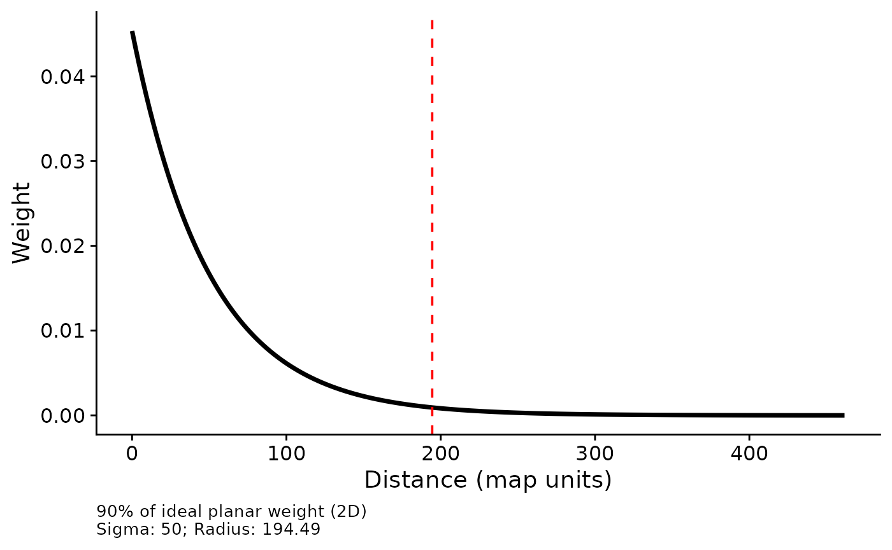
plot_kernel(kernel = 'expow',
beta = 5,
sigma = 50)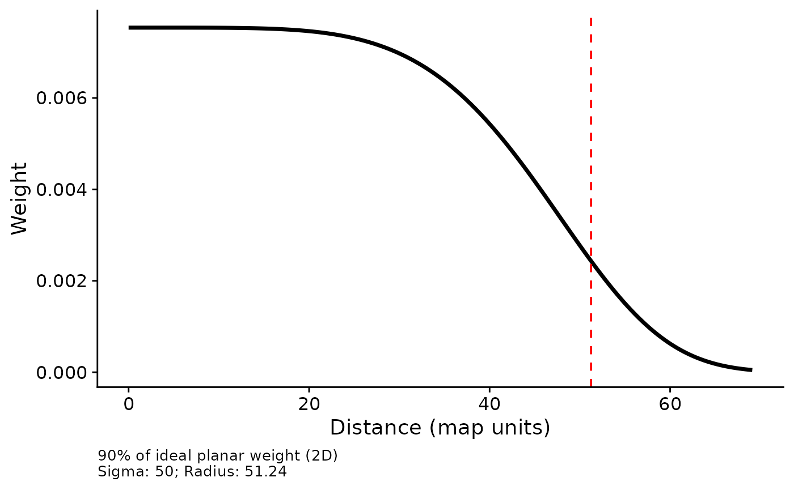
plot_kernel(kernel = 'gaussian',
sigma = 50)
plot_kernel(kernel = 'gaussian',
sigma = 50)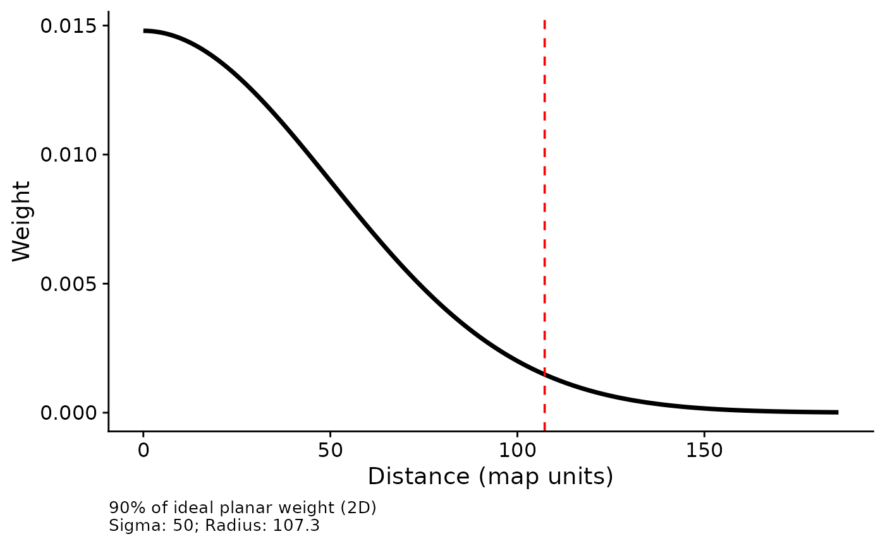
plot_kernel(kernel = 'gaussian',
sigma = 50,
scale_dist = F)
plot_kernel(kernel = 'gaussian',
sigma = 50,
add_label = F)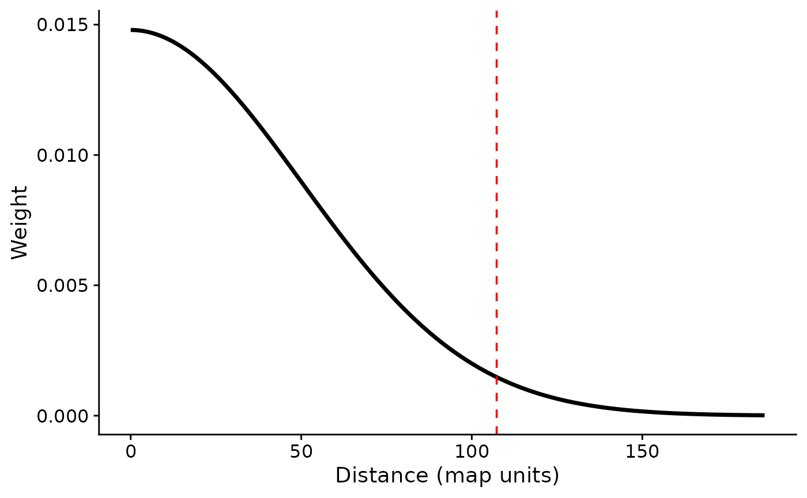
# Original line-based marker, without changing sigma.
plot_kernel(kernel = 'gaussian', sigma = 50, dimension = "1d")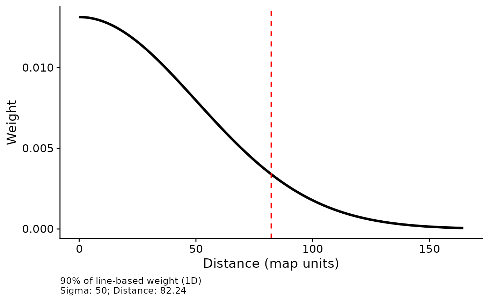
sim_rast
Raster surfaces can be simulated that are amenable for use the
sim_dat function.
r_sim1 <- sim_rast(dim = 100,
resolution = 30,
user_seed = 555)
r_sim2 <- sim_rast(dim = 100,
resolution = 30,
autocorr_range1 = 100,
autocorr_range2 = 1,
sill = 10,
user_seed = 555)
plot(r_sim1)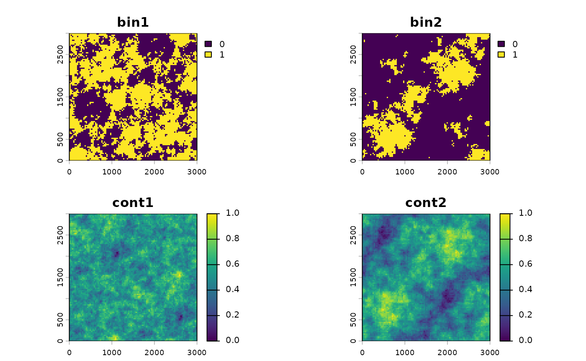
plot(r_sim2)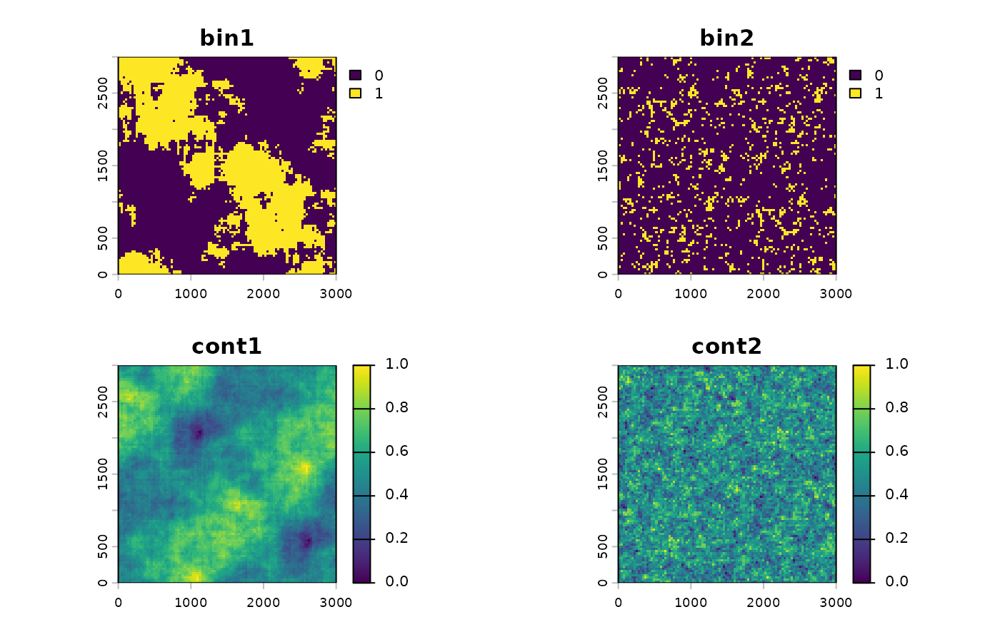
sim_dat
This function will simulate data from scaled raster surfaces.
s_dat <- sim_dat(alpha = 0.25,
beta = c(0.75, -0.75),
kernel = 'gaussian',
sigma = c(350, 200),
type = 'count',
n_points = 100,
raster_stack = terra::subset(r_sim1, c(1,4)),
min_D = 250,
user_seed = 999)Look at the simulated covariate relationships with counts
Use the simulated data with multiScaleR
sim_mod <- glm(y ~ bin1 + cont2,
family = 'poisson',
data = s_dat$df)
kernel_inputs <- kernel_prep(pts = s_dat$pts,
raster_stack = r_sim1,
max_D = 1500,
kernel = 'gaussian',
verbose = FALSE)
sim_opt <- multiScale_optim(fitted_mod = sim_mod,
kernel_inputs = kernel_inputs)Check results
summary(sim_opt)
plot(sim_opt)
plot(kernel_scale.raster(raster_stack = r_sim1,
multiScaleR = sim_opt))
plot_marginal_effects(sim_opt)